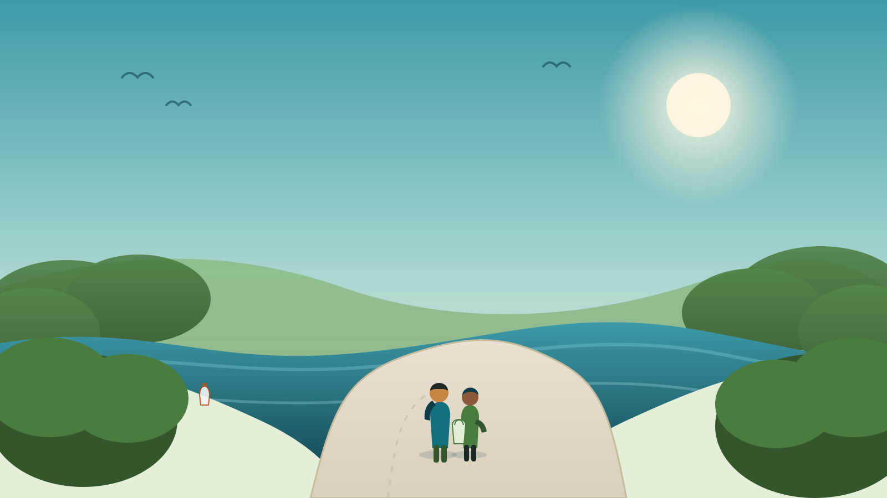
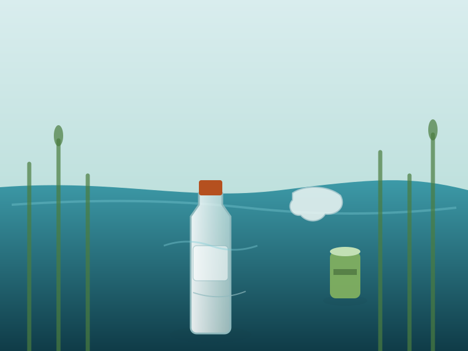
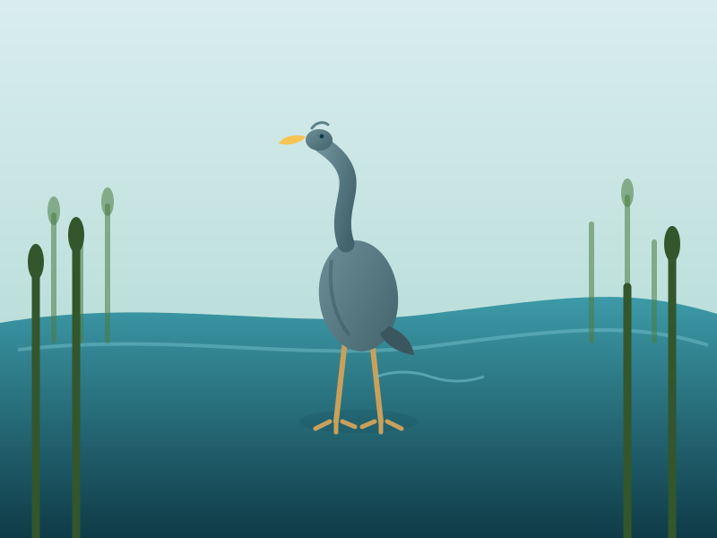
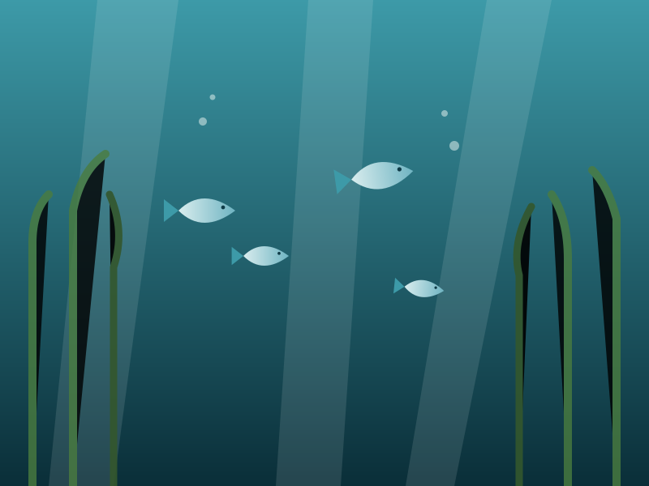
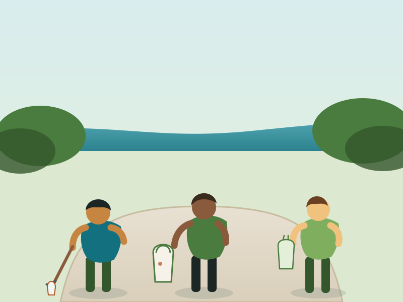

Westchester Youth Waterway Initiative
Youth-led. River-focused. Westchester-wide.
We're a group of local students working to stop litter and pollution from piling up along the Bronx River Pathway near White Plains. We run cleanups, track what we find, and teach our neighbors why it matters, because this river is ours to take care of.

Litter doesn't stay put. It travels.
Every bottle cap and plastic bag left on the pathway ends up somewhere: caught in the reeds, swallowed by wildlife, or washed downstream. Here's what we're seeing on the ground.

Plastic builds up fast
Bottles, wrappers, and bags collect along the banks and in the shallows faster than anyone is picking them up, especially after storms wash trash in from nearby streets.

Wildlife pays the price
Herons, turtles, and fish that call the Bronx River home can get tangled in debris or mistake plastic for food. The pathway is a real habitat, not just scenery.

It doesn't stop here
The Bronx River flows all the way to the Long Island Sound. Litter left in White Plains becomes someone else's problem downstream. Cleaning up here helps the whole watershed.
Real numbers, tracked by us.
We log every cleanup: how many people showed up, how many bags we filled, how many pounds we hauled out. Here's where we stand.
A Roots & Shoots project, run entirely by students.
The Westchester Youth Waterway Initiative is a Roots & Shoots project, part of the global youth program founded by Dr. Jane Goodall and the Jane Goodall Institute. Roots & Shoots provided our start-up grant, but every decision about how we clean up, what we teach, and who we bring in is made by the students running this project.
